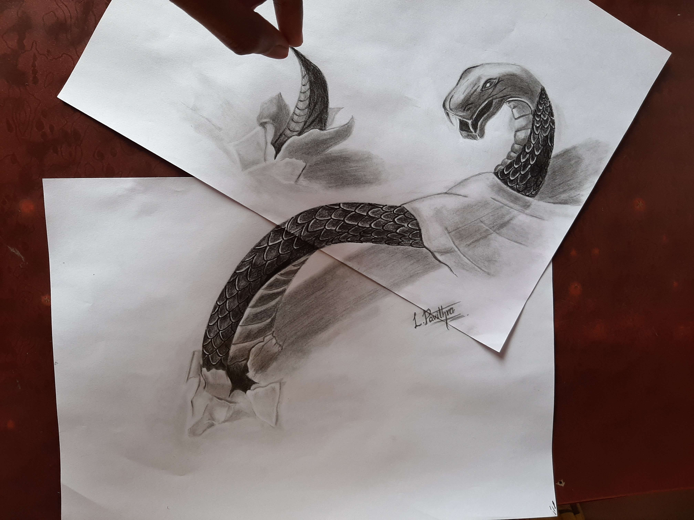
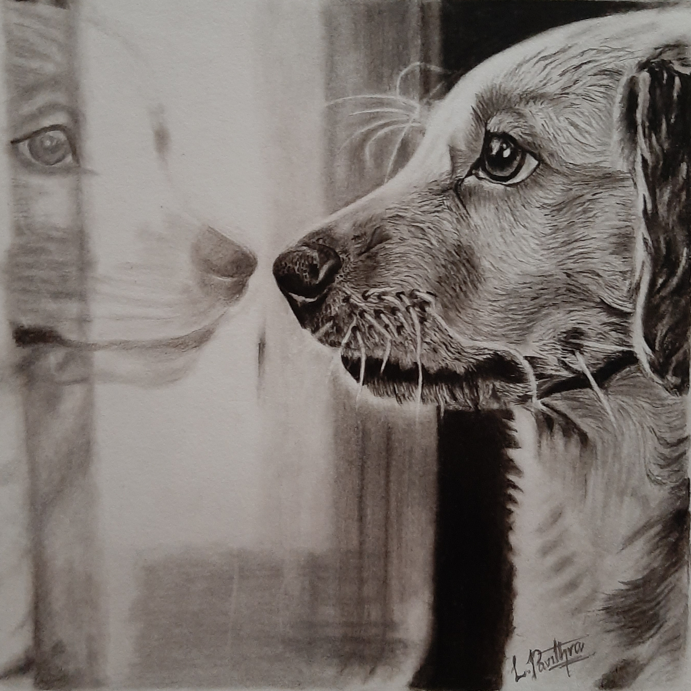

Drawing is the foundation of so many creative practices, from architects to fashion designers to animators and artists. Using a piece of paper and a pen or pencil, the opportunities for self-expression are endless. And by using different drawing techniques, it's incredible to see just how many different ways there are to sketch.
There are innumerable drawing styles to be studied and explored, each one conveying a different final product. Naturally, different types of illustration call upon different skills from the artist. Some are quite detailed and meticulous, requiring a lot of patience, while others work well when the artist is able to be loose and free with their strokes.
The most skilled illustrators don't stick to just one type of drawing, but experiment freely in order to stretch their skills. Of course, they may specialize in one particular way of sketching, but by being flexible with their work they are able to test of different drawing styles and bring those lessons back to their main work. For instance, Leonardo da Vinci may be known for the Mona Lisa, but he was also known to fill hundreds of notebooks with refined finished sketches and spontaneous doodles.
Different Types Of Drawing
- Line art
- Cartoon art
- Photorealism
- pointilism
- Scribbing
And many more...
Few from my top collections

- 


- 